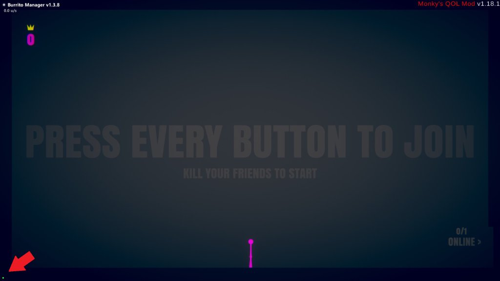

StickFight-AntiKick (v1.0.0)
BepInEx 5 anti-kick mod for Stick Fight: The Game.
What it does
Defends against 7 different modes of kicks and forced disconnects.
Notifies you in chat when triggered, doesn't conflict with Monky's QOL Mod.
How do I know it's on?
When the mod is active, there is a small green dot with a black outline in the bottom-left corner of your screen. You can press Alt + Z anytime (when not typing in chat) to hide or show the circle.

Install
- Install BepInEx 5.x (x64) for Stick Fight: The Game.
- Download
AntiKick.zip, extract AntiKick.dll, and drop it into BepInEx\plugins\AntiKick.dll.
- Launch the game.
Obfuscation & Safety Audit
AntiKick.dll is obfuscated and distributed as a compiled binary only (source code stays private to stop people from easily reverse engineering it).
To verify the DLL is safe without source code, check SECURITY_AUDIT.md or run verify-safety.ps1 (7/7 safety checks passed, 0 violations).
AntiKick.dll • 42,496 bytes • SHA-256: D858C40413F00B157F7932429AC5079A196CB39B622319103E6443119B843999
Contact: semenburrito on Discord